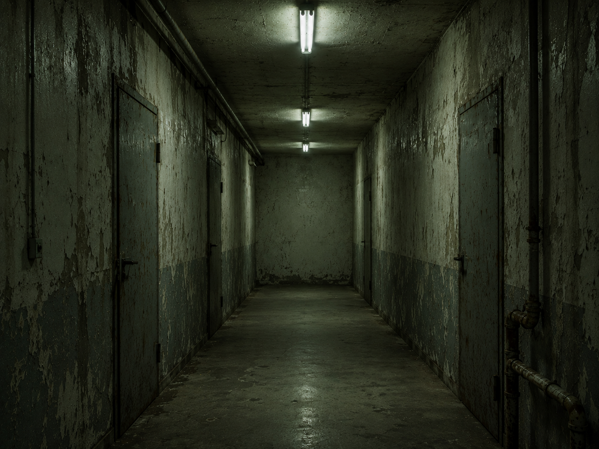

░░░░░░░░░░░░░░░░░░░░░░░░░░░░░░░░░░ · D E S C E N T · 03 / 40 · ░░░░░░░░░░░░░░░░░░░░░░░░░░░░░░░░░░

So you go down instead.
Everything here was built to keep one thing moving.
It must keep flowing or the machine forgets.
t x q b z m f k n d w p v j h s e l c y o a u g r i t b n p d z r k w e m c j v u o l b s y q d c